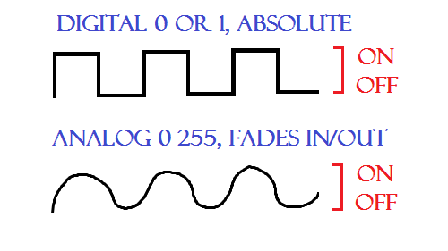

Advanced Arduino | Electronics
Arduino
Arduino is microcontroller platform that is easy to use for electronics projects. It allows you to connect electronics through its pins so you can control things. The Arduino has a microcontroller the has a processor, kilobyte or two of RAM, erasable programmable read-only memory (EPROM). The input and output pins link the microcontroller to the rest of the electronics. Inputs can read both digital (is the switch on or off) and analog (what is the voltage at a pin?). Outputs can also be analog or digital. The Atmel microcontroller on an Arduino board is the 28-pin chip fitted into the socket in the center of the board. It was originally designed to teach art students to control electronics in a weekend. It really is a simple microprocessor that can either turn electricity on or off or control the voltage.



How To Code In Arduino
It is easy to code for Arduino. Arduino uses a set of C/C++ functions that is passed to a C/C++ compiler called avr-g++.
How to Code In ArduinoArduino Code and Syntax Overview
Circuito.io
Circuito.io is an online circuit creator and Arduino code generation tool. Play around with in and see if you find it helpful.
Circuito.ioElegoo 37 Sensor Kit
You can use the link to access the code, libraries and manual for how to use the 37 different sensors.
ELEGOO SENSOR KIT CODE & LIBRARIESAssignments
1. Document and take pictures of all projects using the sensors from the 37 sensor kit. Some will be extremely quick.
2. Create something using the sensors from the kit. You can combine two more sensors if necessary to create a useful product or design. Include the code and detail what each line of code is doing by adding comments to the code.
3. Document each project you complete with a picture or short video of the project in action.
Back to index